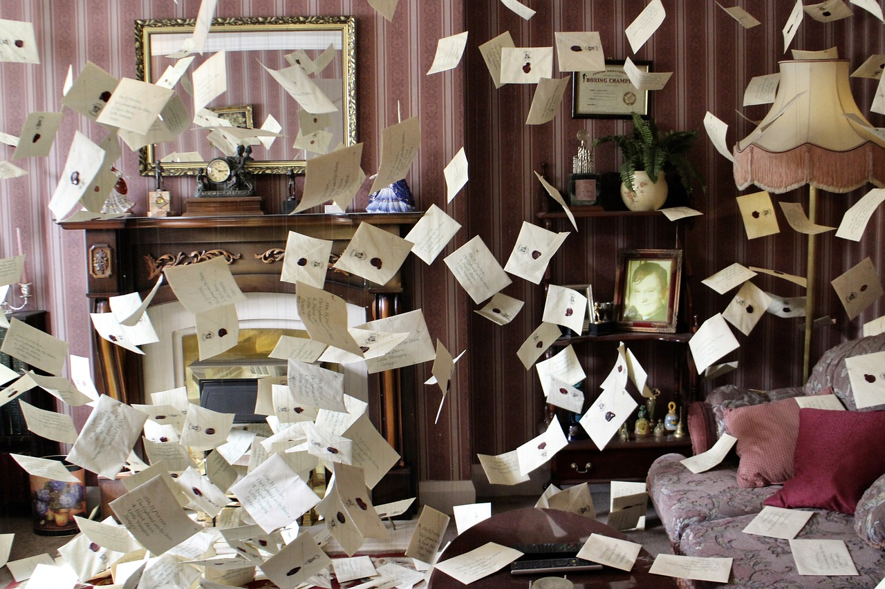

Estudiantes

Admisiones
Todos los almunos y alumnas admitidos fueron previamente elegidos por el Colegio en virtud de nacimiento. Donde quiera que usted esté será contactado por medio de una lechuza con su respectiva carta de bienvenida. De nunca ser contactado, no podrá estudiar en Hogwarts Colegio de Magia y Hechicería.
Sombrero Seleccionador
El primer día, durante el banquete de principios de clase de cada año, los almunos recién ingresados serán llamados alfabéticamente. Al escuchar su nombre deben subir al taburete y ponerse el sombrero seleccionador. El sombrero seleccionador será el encargado de elegir la casa a la que cada estudiante pertenecerá, sea Gryffindor, Hufflepuff, Ravenclaw o Slytherin.

Lista de Útiles. 1er año

Todos los estudiantes necesitan los siguientes artículos para estudiar en Hogwarts. Ya tienes uniforme, pero necisatarás comprar el resto de los artículos de la lista.
UNIFORME
1. Tres conjuntos de túnicas de trabajos simples.
2. Un sombrero simple de punta (negro) para llevar durante el día.
3. Un par de guantes protegidos (de piel de dragón o similar).
4. Una capa de invierno (negra con hebillas planas).
COLECCIÓN DE LIBROS
1. El Libro de Hechizo estandar (grado 1). De Miranda Goshawk.
2. Historia de la Magia. De Bathilda Bagshot.
3. Teoría de la Magia. De Adalbert Waffling.
4. La Guía del Principiante para la Transfiguración. De Emeric Switch.
5. Mil Hierbas Mágicas y Hongos. De Phyllida Spore.
6. Filtros y Posiones Mágicas. De Arsenius Jigger.
7. Animales Fantásticos y Dónde Encontrarlos. De Newt Scamander.
8. Las Fuerzas Oscuras: Guía de Protección Personal. De Quentin Trimble.
OTROS UTENSILIOS
1. Varita mágica.
2. Caldero (peltre, tamaño estándar 2).
3. juego de ampollas o campollas de cristal.
4. Telescopio.
5. Juego de Balanzas de Latón.